Gabriel Andrade-Ponce
Sobre mi
Blog
Publicaciones
Publicaciones
Order By
Default
Date - Oldest
Date - Newest
Title
Date
Title
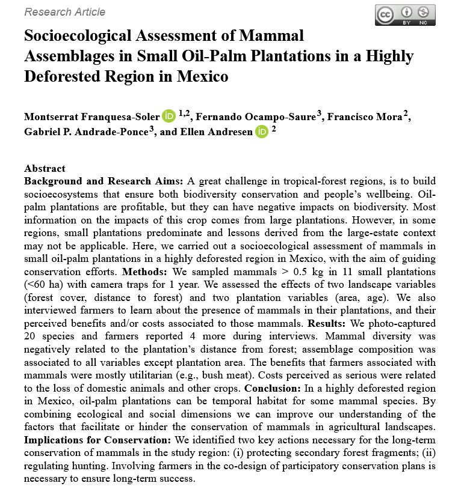
2023
Franquesa-Soler, M., Ocampo-Saure, F., Mora, F.,
Andrade-Ponce, G. P.
, & Andresen, E. (2023). Socioecological Assessment of Mammal Assemblages in Small Oil-Palm Plantations in a Highly Deforested Region in Mexico.
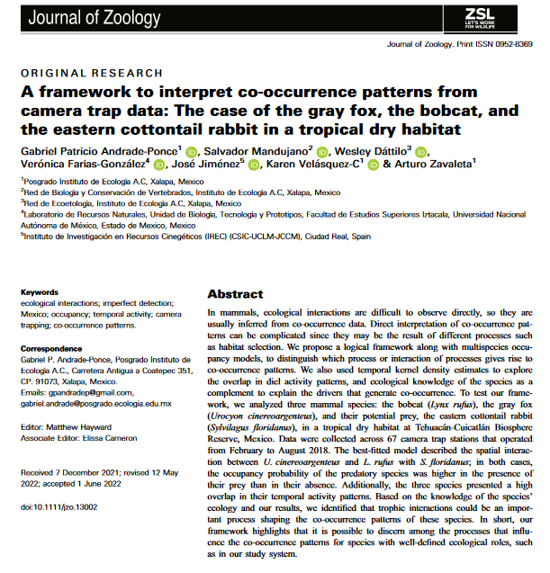
2022
Andrade-Ponce, G.P.
, Mandujano, S., Dáttilo, W., Farías-González, V., Jiménez, J., Velásquez-C, K. and Zavaleta, A. (2022), A framework to interpret co-occurrence patterns from camera trap data: The case of the gray fox, the bobcat, and the eastern cottontail rabbit in a tropical dry habitat
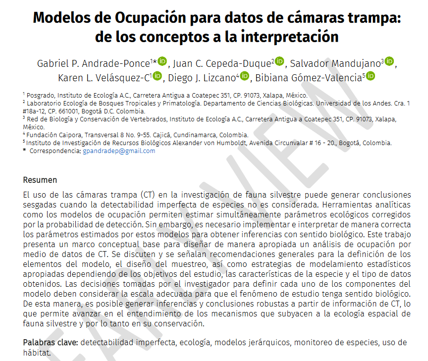
2021
Andrade-Ponce, G
., Cepeda-Duque, J. C., Mandujano, S., Velásquez-C, K. L., Lizcano, D. J., & Gómez-Valencia, B. (2021). Modelos de ocupación para datos de cámaras trampa
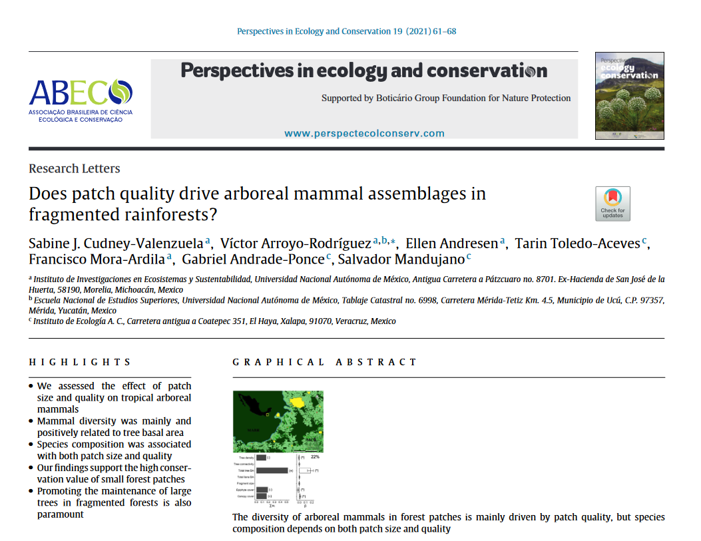
2021
Cudney-Valenzuela, S. J., Arroyo-Rodríguez, V., Andresen, E., Toledo-Aceves, T., Mora-Ardila, F.,
Andrade-Ponce, G.
, & Mandujano, S. (2021). Does patch quality drive arboreal mammal assemblages in fragmented rainforests?
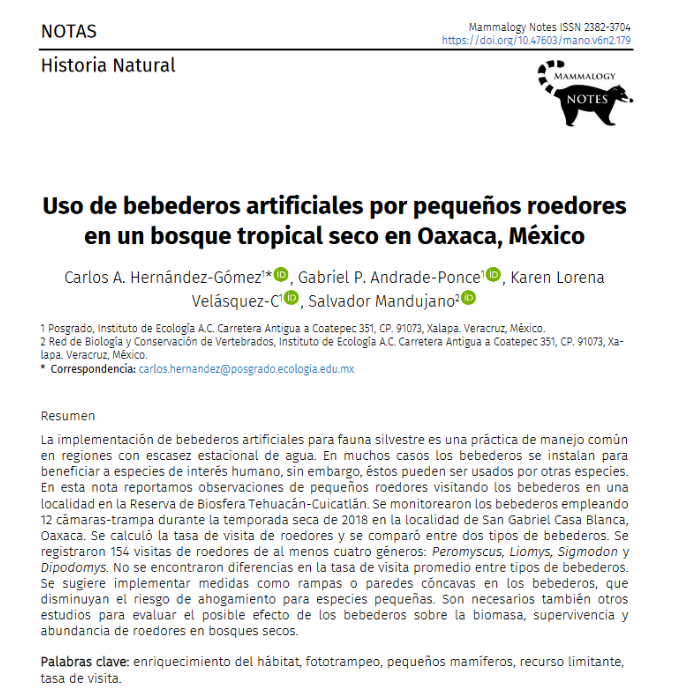
2020
Hernández-Gómez, C. A.,
Andrade-Ponce, G. P
., Velásquez-C., K. L., & Mandujano, S. (2020). Uso de bebederos artificiales por pequeños roedores en un bosque tropical seco en Oaxaca, México
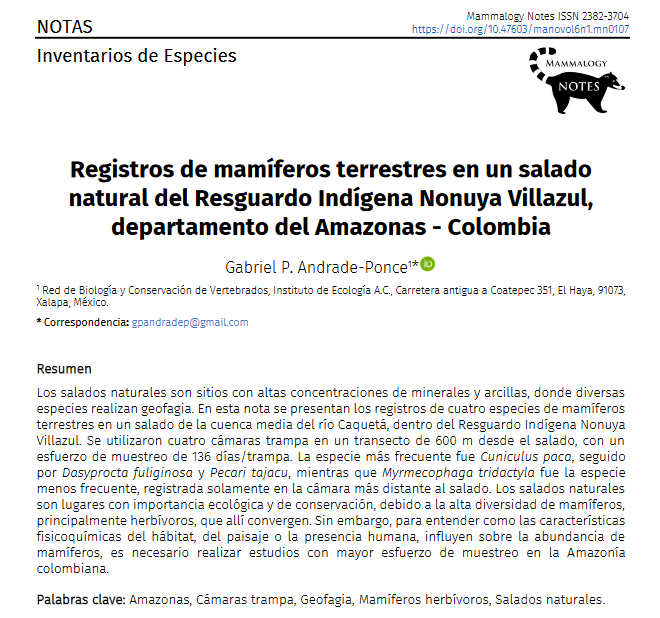
2020
Andrade-Ponce, G.
(2020). Registros de mamíferos terrestres en un salado natural del Resguardo Indígena Nonuya-Villazul departamento del Amazonas, Colombia
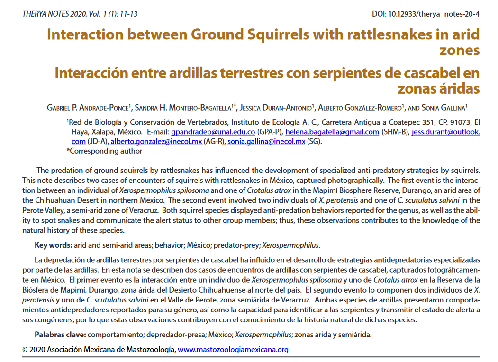
2020
Andrade-Ponce, G. P.
, Montero-Bagatella, S. H., Durán-Antonio, J., González-Romero, A., & Gallina, S. (2020). Interaction between Ground Squirrels with rattlesnakes in arid zones
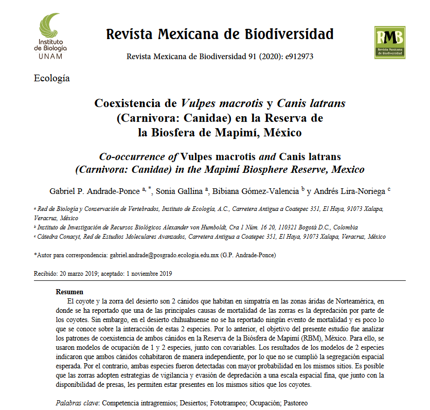
2020
Andrade-Ponce, G. P.
, Gallina, S., Gómez-Valencia, B., & Lira-Noriega, A. (2020). Coexistencia de
Vulpes macrotis
y
Canis latrans
(Carnivora: Canidae) en la Reserva de la Biosfera de Mapimí, México
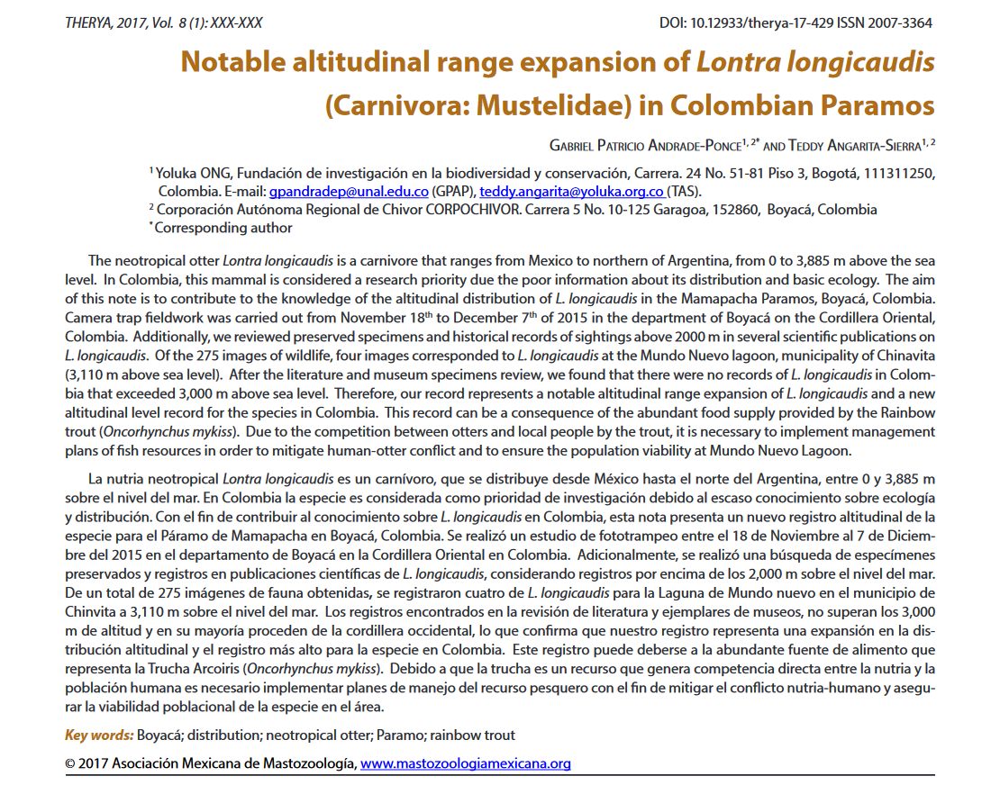
2017
Andrade-Ponce, G.P
& Angarita-Sierra, T. (2017). Notable altitudinal range expansion of
Lontra longicaudis
(Carnivora: Mustelidae) in Colombia
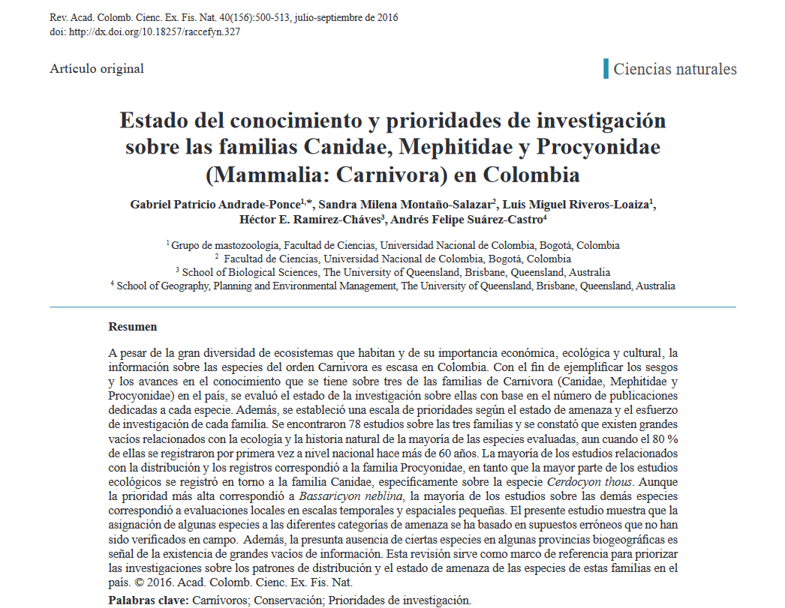
2016
Andrade Ponce, G. P
., Montaño-Salazar, S. M., Riveros-Loaiza, L. M., Ramírez-Cháves, H. E., & Suárez-Castro, A. F. (2016). Estado del conocimiento y prioridades de investigación sobre las familias Canidae, Mephitidae y Procyonidae (Mammalia: Carnivora) en Colombia
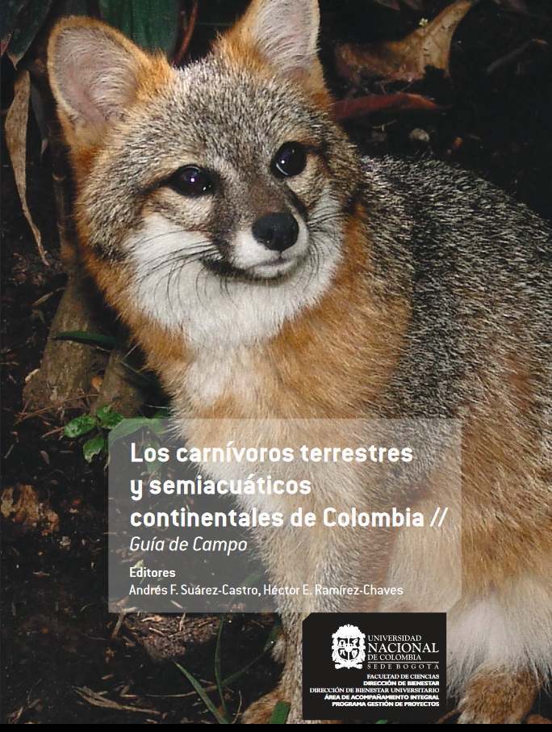
2015
Andrade-Ponce
, G.P., Jiménez-Ramírez, J.S., Montaño Salazar, S.M., Riveros Loaiza, L.M. (2015) Generalidades del orden Carnivora. En Los carnívoros terrestres y semiacuáticos continentales de Colombia // Guía de Campo. Ed Andrés F. Suárez-Castro, Héctor E. Ramírez-Chaves
No matching items